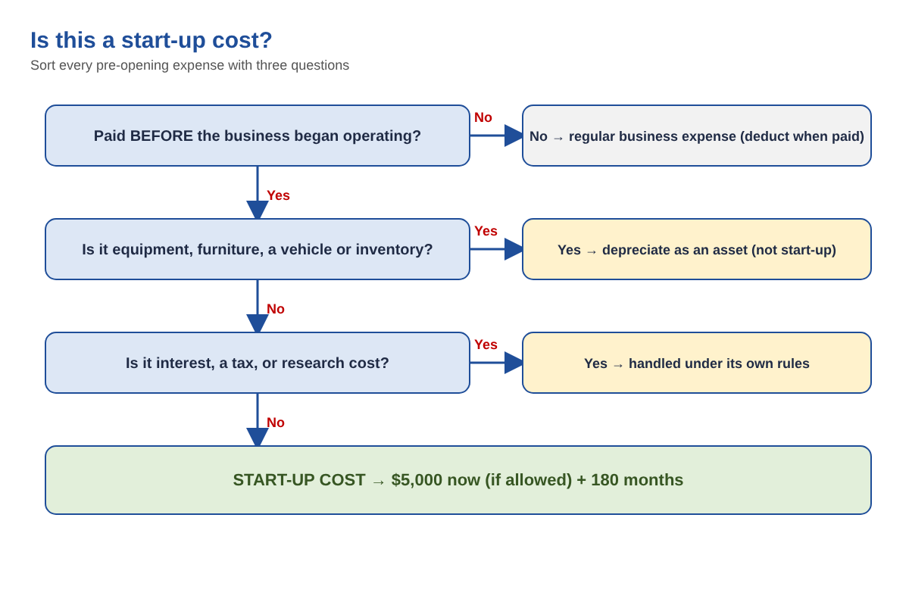
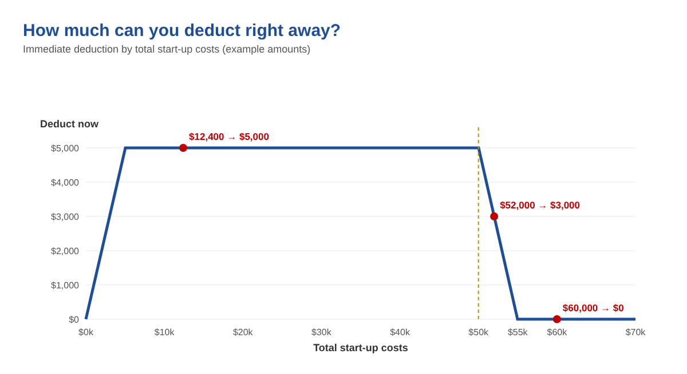
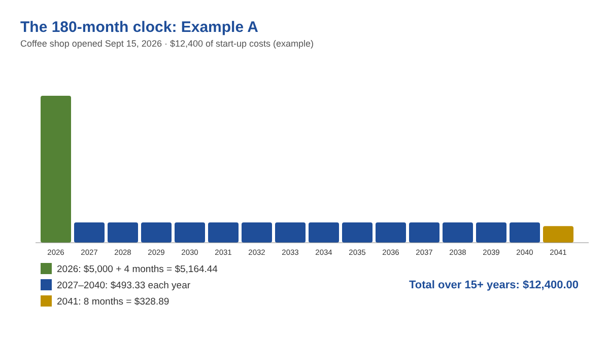

If you opened a business this year, you probably spent money long before the first customer walked in: a market study, a consultant, wages while staff were trained, grand-opening ads, trips to meet suppliers. Many new owners either deduct all of it as ordinary expenses or forget it entirely. Neither is right. Federal tax law treats most of these as start-up costs, and they follow their own rule: up to $5,000 can be deducted in the first year, and the rest is spread over 180 months.
This guide walks you through the whole method so you can do it yourself with a spreadsheet: which costs count, how to compute the first-year deduction, how to build the 15-year schedule, and where it goes on the return. It is written for sole proprietors, LLC owners and small corporations that began operating in 2026.
Everything hangs on one date: the day your active trade or business began. In general that is when you were open and able to serve customers, not the day you formed the LLC, signed the lease or bought equipment. Write the date down and keep proof of it: the first sale, the first invoice, the opening ad or the first day on your booking calendar.
Two reasons the date matters. Only costs paid before that day can be start-up costs (costs after it are ordinary expenses). And the 180-month amortization clock starts in the month you begin.
List everything you paid before opening, one row per cost, and run each through three questions:

| Usually start-up costs | Not start-up costs |
|---|---|
| Market or location research, surveys | Equipment, furniture, vehicles, build-out (depreciate these) |
| Advertising for the opening | Deductible interest (for example, loan interest) |
| Wages for employees being trained, and their instructors | Deductible taxes |
| Travel to secure suppliers, distributors or customers | Research and experimental costs |
| Consultant, executive or professional fees before opening | Inventory you will sell (cost of goods sold) |
Organizational costs are a separate bucket for corporations and partnerships: the direct costs of creating the entity, such as legal fees for the charter or partnership agreement, state filing fees, accounting for the setup and organizational meetings. They get their own, separate $5,000 / $50,000 limit. Costs of selling stock or partnership interests and costs of transferring assets into the company do not qualify.
The rule has three parts. You may deduct up to $5,000 in the first year. That $5,000 shrinks dollar-for-dollar once total start-up costs pass $50,000, so at $55,000 or more nothing is deductible right away. Whatever is left is amortized evenly over 180 months, starting with the month the business began.

| Total start-up costs (example) | Deduct now | Amortize over 180 months | Per month |
|---|---|---|---|
| $3,000 | $3,000 | $0 | $0.00 |
| $12,400 | $5,000 | $7,400 | $41.11 |
| $50,000 | $5,000 | $45,000 | $250.00 |
| $52,000 | $3,000 | $49,000 | $272.22 |
| $60,000 | $0 | $60,000 | $333.33 |
Example values for illustration only.
Put total start-up costs in B2, the date the business began in B7 and your tax year-end month in B8 (12 for December). Then:
| Cell | What it is | Formula |
|---|---|---|
| B3 | Months in first tax year | =MOD(B8-MONTH(B7),12)+1 |
| B4 | Deduct now | =MIN(B2,MAX(0,5000-MAX(0,B2-50000))) |
| B5 | Monthly amount | =(B2-B4)/180 |
| B6 | First-year deduction | =B4+B5*B3 |
These work the same in Excel and Google Sheets. If you are a corporation or partnership with organizational costs, repeat the same four formulas in a second column for those costs and add the two results.
The deduction does not end in year one. Make a small table with one row per tax year: year 1 gets the months from your opening month to year-end; each later year gets 12 months; the last row gets whatever is left so the total is exactly 180 months. Multiply each row's months by the monthly amount and add the immediate deduction to year 1 only. The column should total your original costs.

A coffee shop opened on September 15, 2026 with $12,400 of start-up costs: a $1,200 market study, a $2,500 consultant, $900 of supplier travel, $4,800 of training wages and $3,000 of opening ads. The $9,500 espresso machine and $350 of loan interest are left out (the machine is depreciated; the interest follows its own rules).
| Tax year | Months | Deduction |
|---|---|---|
| 2026 | 4 (Sep–Dec) | $5,000 + $7,400 ÷ 180 × 4 = $5,164.44 |
| 2027 to 2040 | 12 each | $493.33 each year |
| 2041 | 8 | $328.89 |
| Total | 180 | $12,400.00 |
Example values for illustration only.
Opened March 1, 2026 with $52,000 of start-up costs and $3,800 of organizational costs. Start-up: $5,000 − $2,000 = $3,000 now, plus $49,000 ÷ 180 × 10 months = $2,722.22. Organizational: $3,800 is under $5,000, so all of it now. First-year total: $9,522.22 (example).
Opened November 2, 2026 with $60,000 of start-up costs and $7,500 of organizational costs. Start-up: over $55,000, so nothing now; $60,000 ÷ 180 × 8 months (November to June) = $2,666.67. Organizational: $5,000 now plus $2,500 ÷ 180 × 8 = $111.11. Deduction for the year ending June 30, 2027: $7,777.78 (example).
| 2026 calendar-year return | Due date | With extension |
|---|---|---|
| Partnership (Form 1065), S corporation (Form 1120-S) | March 15, 2027 | September 15, 2027 |
| Sole proprietor (Form 1040 with Schedule C) | April 15, 2027 | October 15, 2027 |
| C corporation (Form 1120) | April 15, 2027 | October 15, 2027 |
Dates from IRS Publication 509 (2027 draft). Fiscal-year filers use dates tied to their own year-end.
Costs paid before opening are deducted starting in the year the business begins, so the 2025 spending is part of your 2026 start-up costs.
If you completely dispose of the business, the remaining deferred start-up costs can generally be deducted in that year, to the extent they qualify as a business loss.
Costs of a general search for a business are personal and not deductible. Costs of trying to start or buy a specific business are generally capital expenses, which may be deductible as a capital loss. Corporations can be treated differently.
A late election may be possible on an amended return filed within six months of the original due date (not counting extensions), marked "Filed pursuant to section 301.9100-2". Talk to a tax professional before relying on this.
This article is educational and is not tax, legal or accounting advice. Rules can change and your facts may lead to a different answer; confirm with a qualified tax professional before filing. State rules may differ from the federal rules described here.
You can download the ready-made Start-Up Cost Deduction Calculator 2026 for free in the Free kit download box below (Excel + PDF guide, no sign-up).